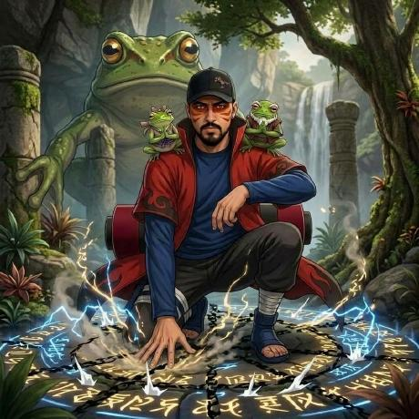
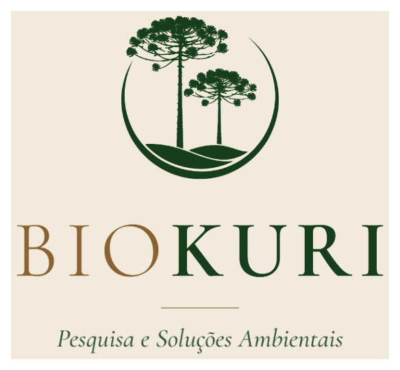

Lucas Aøsf
<Biólogo · Gestor Ambiental · Taxonomista · Fundador Biokuri>
Biólogo (UNIFATEA) e Especialista em Gestão Ambiental (UNOPAR), anilhador CEMAVE/ICMBio. Atua há mais de uma década na vanguarda da Taxonomia & Sistemática Filogenética (com ênfase apaixonada em anfíbios anuros e répteis), ecologia de campo em todos os biomas brasileiros e automação científica em R e Python para modelagem de biodiversidade e gestão de grandes empreendimentos.
Atuação & Foco Central
Integração pioneira entre o rigor taxonômico de museu e campo, a gestão ambiental corporativa e a engenharia de dados ecológicos.
Taxonomia & Sistemática de Anuros e Répteis (Foco Primário)
Especialista em anfíbios anuros (sapinhos-da-serra Melanophryniscus, pererecas Boana, rãs Leptodactylus) e serpentes (clado Bothrops atrox). Diagnose morfológica, bioacústica de vocalizações, chaves dicotômicas e redescobertas históricas.
Gestão Ambiental & Licenciamento de Grandes Obras
Especialista em Gestão Ambiental (UNOPAR). Responsabilidade técnica em duplicações de rodovias, ferrovias, hidrelétricas e indústrias, elaborando diagnósticos para EIA/RIMA, laudos CETESB e programas de mitigação de impacto.
Ecologia Computacional & Programação em R
Pipelines avançados para mineração do GBIF (Global Biodiversity Information Facility), análise estatística multivariada de comunidades faunísticas, bioestatística e modelagem ecológica (apresentada na COP30).
Engenharia de Softwares de Campo (PWAs)
Idealizador e arquiteto de PWAs como a Caderneta de Campo (georreferenciamento offline, listas de Mackinnon, exportação instantânea Excel) e Cubagem Florestal Smalian.
Bio-Tech & Scientific Stack
Ferramentas de computação, protocolos de amostragem zoológica e frameworks de análise ambiental aplicados rotineiramente.
Soluções Desenvolvidas, Softwares & Labs

Caderneta de Campo
Aplicativo mobile PWA completo para levantamento e monitoramento de fauna e flora em campo. Funciona 100% offline, com marcação de coordenadas GPS, listas de Mackinnon, contagem de abundância, histórico de espécies e exportação direta para planilhas Excel estruturadas.

Cubagem Florestal Smalian
Ferramenta digital de alta precisão para cálculo volumétrico de toras de madeira pelo método rigoroso de Smalian. Inclui banco de dados dendrológico de espécies nativas, interface otimizada para campo e geração automática de laudos e planilhas técnicas.

M_moreirae_distribution
Pipeline em linguagem R para mineração automatizada de ocorrências georreferenciadas na base global do GBIF do sapinho-da-serra (Melanophryniscus moreirae). Integração de dados de ciência cidadã com modelagem biogeográfica que fundamentou artigo aceito em periódico internacional.

Consultoria Ambiental Data Hub
Framework de scripts e automação para ingestão e conversão de dados brutos coletados em campo para matrizes consolidadas. Agiliza a produção de diagnósticos para EIA/RIMA, gerando curvas de acumulação de espécies, índices ecológicos e tabelas taxonômicas.

IMBio: Restauração & Clima (COP30)
Script de análise temporal de dados ecológicos (2019-2024) comprovando que o reflorestamento reduziu a temperatura de superfície e elevou a riqueza da avifauna de 42 para 131 espécies no Parque das Nascentes (Guaratinguetá/SP), apresentado na 30ª Conferência do Clima da ONU.

Brazilian Team XPRIZE Rainforest
Pesquisador integrante da equipe brasileira na competição global XPRIZE Rainforest (Projeto 104437). Responsável pela instalação e calibração de gravadores autônomos para captação contínua e análise bioacústica de vocalizações em floresta tropical.
Produção Bibliográfica & Contribuições Taxonômicas
Peer-ReviewedArtigos completos em periódicos científicos internacionais e nacionais, com foco em sistemática, anfíbios anuros, répteis, história natural e redescobertas.
After three decades, the rediscovery of Bothrops bilineatus (Squamata, Viperidae) in Espírito Santo State, southeastern Brazil
Registro e confirmação morfológica/taxonômica da víbora-verde após 30 anos sem ocorrências documentadas no Espírito Santo, preenchendo lacunas críticas de biogeografia e conservação da Mata Atlântica.
Update and expansion of the distribution of the Maldonado Redbelly Toad, Melanophryniscus moreirae Gallardo 1966, in Southeast Brazil, using citizen science data
Expansão e atualização dos limites de distribuição geográfica do sapinho-da-serra (espécie endêmica de altitude de anfíbio anuro), aliando curadoria taxonômica a dados massivos de ciência cidadã validados.
New records of death feigning in two species of Bothrops Wagler, 1824 (Squamata: Viperidae) belonging to the atrox clade
Primeiros relatos detalhados de tanatose (simulação de morte) em serpentes do clado Bothrops atrox, discutindo implicações etológicas e caracteres comportamentais em viperídeos neotropicais.
First record of predation by Hoplias malabaricus (Characiformes: Erythrinidae) on Leptodactylus paranaru (Anura: Leptodactylidae) in the Atlantic Forest
Primeiro registro formal de predação da rã Leptodactylus paranaru pela traíra, documentando interações tróficas aquático-terrestres em áreas ciliares de Mata Atlântica.
First record of predation of the leopard tree frog Boana pardalis (Anura: Hylidae) by the water snake Erythrolamprus miliaris (Squamata: Dipsadidae)
Registro de história natural e predação de anfíbio anuro arbóreo de grande porte (perereca-leopardo) por cobra d'água na Mata Atlântica costeira.
Guia Iconográfico “APA Mananciais Rio Paraíba do Sul – Trecho Paulista”
Contribuição fotográfica integral e identificação taxonômica da herpetofauna: fotografias de alta resolução de anfíbios e répteis que compõem quase todo o acervo do guia oficial do ICMBio.
Experiência Profissional & Gestão Ambiental
Responsabilidade técnica e consultoria especializada em infraestrutura de grande porte e gestão ambiental em todo o Brasil.
Biólogo Analista Ambiental
Caruso Soluções Ambientais & Tecnológicas Jul. 2026 – Atual • Paraná & HíbridoResponsável pela execução das atividades de campo em monitoramento ambiental (fauna, ruído ambiental e qualidade da água), planejamento de campanhas, aplicação metodológica, inventários, fichas de campo e apoio a relatórios técnicos.
Biólogo Herpetólogo · Responsável Técnico (RT)
Engpacto Soluções Ambientais 2023 – Atual • SP · PRRT pelos grupos de herpetofauna e quiropterofauna na duplicação da Rodovia dos Tamoios (Trecho Serra), Contorno Sul de Caraguatatuba e São Sebastião, duplicação de rodovias no Paraná, EIA/RIMA do Complexo Logístico Tatu (Cubatão/SP) e extensão da Rodovia Carvalho Pinto (Taubaté–Aparecida).
Biólogo / Pesquisador
IMBio — Instituto de Manejo da Biodiversidade 2020 – Atual • Vale do Paraíba & Litoral NortePesquisas com fauna na Serra da Mantiqueira, Serra da Bocaina e Serra do Mar. Linhas de investigação em bioacústica e padrões de vocalização de anfíbios e aves, taxonomia, evolução, sistemática filogenética, biogeografia e programas de educação ambiental.
Biólogo Herpetólogo / Mastozoólogo
EcosBrasil Consultoria e Planejamento Ambiental 2024 – 2026 • MS · SP · SCMonitoramento de herpetofauna e mastofauna para a instalação da Fábrica de Celulose Arauco (Inocência/MS), celulose em Bataguassu/MS, Cargill no MS, portos de areia (Pindamonhangaba, Aparecida e Realmix/Boituva) e empreendimentos industriais.
Biólogo de Campo / Herpetólogo
Cayman Ambiental Science & Environment 2025 – 2026 • GoiásResponsável técnico por mastofauna e herpetofauna no monitoramento de fauna da PCH Verde 2 (Rio Verde/GO) e monitoramento de herpetofauna na Mineradora Massari.
Biólogo Ornitólogo, Herpetólogo e Mastozoólogo
Juma, Cedro & Elementus Soluções Ambientais 2022 – 2025 • SP · RJ · PA · MG · GOMonitoramento de aves suscetíveis à colisão em Linhas de Transmissão de alta tensão (LT 500 kV Estreito–Cachoeira Paulista, LT 230 kV Itumbiara–Paranaíba, LT Fernão Dias, LT Marituba–Tucuruí no bioma Amazônia), ornitofauna portuária no Porto de São Sebastião/SP e parque solar em Janaúba/MG (Caatinga).
Formação Acadêmica & Credenciais
Títulos Acadêmicos
Especialização em Gestão Ambiental (Pós-Graduação Lato Sensu)
Especialização voltada à governança ambiental, instrumentos de planejamento territorial, licenciamento de grande porte, mitigação de impactos e compliance regulatório.
Pós-Graduação • Gestor AmbientalGraduação — Licenciatura em Ciências Biológicas
TCC com mérito acadêmico: “Levantamento da Ornitofauna do Parque Ecológico do Taboão”, Lorena/SP. Bolsista de pesquisa institucional e bolsista PIBID-CAPES de iniciação à docência.
Graduação Superior • BiólogoRegistros Oficiais & Qualificações Técnicas
Registro Profissional CRBio-01 nº 127233/01-D
Biólogo registrado e devidamente habilitado para assunção de Anotações de Responsabilidade Técnica (ART) e laudos de fauna em âmbito nacional.
Ativo & RegularAnilhador Júnior Credenciado CEMAVE nº 7723874
Credencial oficial do Centro Nacional de Pesquisa e Conservação de Aves Silvestres para anilhamento, captura, biometria e marcação de avifauna.
Credencial OficialInstrutor: Prevenção & Manejo de Peçonhentos e Jacarés
Capacitação teórica e treinamento de segurança para militares e especialistas em contenção física de répteis peçonhentos e crocodilianos.
Docência / TreinamentoSimpósios Internacionais & Especialização
Participação no II International Symposium on Tadpole Evolution (2024), AVISTAR (2024), análise de muda em aves e cursos avançados de herpetologia.
Educação ContinuadaGitHub & Atividade Aberta
Manifesto Científico
"Na sistemática e no estudo dos anfíbios anuros reside a chave para compreender não apenas quem compartilha o planeta conosco, mas a própria saúde dos nossos ecossistemas. Quando aliamos a taxonomia clássica à gestão ambiental e às ferramentas computacionais modernas, damos escala e precisão à conservação da biodiversidade." — Lucas Aøsf, Biólogo, Gestor Ambiental & Fundador da Biokuri